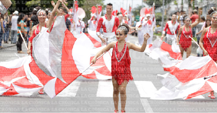

COLORS
La danza en las bandas de marcha funciona como una coreografía sincronizada que acompaña la música. Los miembros de la banda realizan movimientos planificados y precisos mientras tocan sus instrumentos, creando formaciones y figuras visualmente atractivas. Estos movimientos pueden incluir pasos de marcha, giros, y uso de accesorios como banderas. La coordinación entre los músicos es esencial para lograr un espectáculo cohesivo y dinámico.
